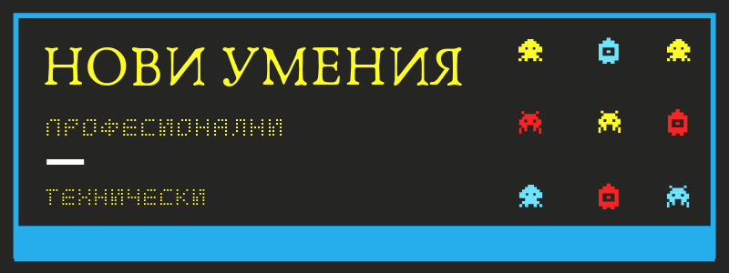

Какви нови умения може да научим
Технологиите постоянно се променят, но хората- не толкова.
Във всеки случай, нищо не е сигурно.
За да си спестим стрес трябва постоянно да се учим: както за своя полза, така и за да функционираме в корпоративната джунгла.
Общо взето има два вида умения, които може да добавим към CV-то си: професионални или технически.
* ПРОФЕСИОНАЛНИ УМЕНИЯ *
Професионалните, наречени още меки умения, имат предимството, че са преносими т.е. може да се приложат при друга позиция или компания.
Обикновено мислим за тях като за вродени таланти, но хората са размишлявали и са ги подобрявали в продължение на хилядолетия от римския император Марк Аврелий до Сюзан Кейн, лектор и интроверт.
Най- търсени от работодателите днес са преценка и вземане на решения, решаване на сложни проблеми и активно учене.
Тези специализирани умения може да се разделят главно на лични, които да упражняваме сами, и социални, които ни позволяват да работим в екип.
В първата графа се включват както когнитивни (свързани с мисленето), така и поведенчески умения:
- ефективност, дисциплина и решителност;
- продуктивност, бързо учене и управление на времето;
- издръжливост, постоянство, справяне със стреса;
- проучване, анализиране, решаване на проблеми.
Във втората графа са умения, които на практика ви позволяват да свършите десеторно повече без да си мръднете пръста.
- комуникация, убеждаване и преговаряне;
- сътрудничество, организиране, планиране;
- лидерство, менторство и трениране.
Най- лесно тези умения се усвояват като наблюдавате и се учите от примера на по- старши колеги или мениджъри. Фирмената култура, която всеки формира отчасти, също допринася за ефективното им прилагане. Защото колкото и добра да е стратегията ви, ако няма кой да я изпълни компетентно и с ентусиазъм, нямате шанс.
Например, понеже за Starbucks е важно настроението и любезността, за да може да продават толкова скъпо кафе, при обучението на нови служители предварително се питат как биха реагирали ако клиент им се разкрещи. Така когато се стигне до този неприятен момент, баристата е по- спокоен и се държи подобаващо.
Струва ни се нормално постоянно да сме нещастни или неангажирани на работа. Да казваме истината без страх, да вдъхновяваме или да дадем кураж на някой да сподели брилянтната си идея все още не е достатъчно оценено.
Ако една компания успява да привлича талантливи служители, но средата не предразполага към израстването им и за справянето им с ежедневните трудности, рано или късно ще започне да запада.
Ако един служител не разбира или нарочно пренебрегва съобщенията, които колегите му отправят без думи (или в прав текст), може да му лепнат етикет гадняр, мързеливец… или по- лошо- особняк. А никой не иска да го смятат за ненадежден.
За социалните умения мислете като за друга областта на знанието- разбийте ги на съставни части. Не се учите да бъдете харизматични, а да забелязвате когато някой се чувства неудобно за да ги предразположите, как да ги накарате да се чувстват изслушани и разбрани и как да показвате увереност чрез гласа и езика на тялото. Не се учите да бъдете продуктивни, а да си записвате всичко в календара, да си настройвате Помодоро сесии или да класифицирате и приоритизирате задачите си. Не се учите да комуникирате, а да структурирате ясно имейла си, да се поставяте на мястото на другите или кой канал предпочитат (на живо, по телефона или писмено) или как да напуснете скучен разговор. За по- нататъшни насоки, вижте ръководството на Рамит Сети или сериите за меки бизнес умения на Crash Course.
* ТЕХНИЧЕСКИ УМЕНИЯ *
Техническите умения се отнасят до определен занаят или професия. Те включват както експертиза, така и опит в дадената област.
Тези умения лесно се измерват, така че HR отделите наблягат на тях. По- сигурно е. И те са чудесни, защото ни позволяват да създаваме; и то в невъобразим мащаб, където компании с хиляди служители се синхронизират за обща цел, която никой отделен служител не може да постигне сам.
Език
За да са печеливши, повечето фирми в България работят за износ. Малка страна сме, което значи, че научаването на нов език ни носи само ползи.
Сигурно сте чували за приложението Duolinguo, което е доста добро за начало, но черпи доста батерия. За източните езици любимото ми е LingoDeer. А за всякакви индоевропейски езици, особено френски, ви препоръчвам сайта ielanguages: не изглежда много представителен, но съдържанието е превъзходно.
В сайтовете като edx също вече има такива езикови и специализирани курсове.
Писане
За да се развиваме в професионален план, нужно е да оформяме идеите си, да ги изразяваме ясно и да убеждаваме сътрудниците ни да ги изпълняват. Повече от разговора, днес за тази цел ни служи писането. Доброто писане показва добра мисъл. Дори онлайн, въпреки разпространението на видеото и други формати, повечето информация получаваме от различни текстове: имейли, статии и други публикации. Обикновено за добро писане смятаме такова с правилна граматика, но също толкова важно е да подреждаме и представяме ясно посланието. Това се нарича йерархия на информацията: включва разбиване на параграфи, слагане на смислени заглавия и осигуряване на възможност за бързо или бегло преглеждане. На по- високо ниво, означава да се замисляме за ритъма на текста ни (т.е. редуване на къси и дълги изречения), хармонии и използване на обикновени и следователно по- лесно разбираеми думи. Тези умения ни помагат за изготвяне на спецификации, презентации и кореспонденция, тоест всякакъв вид общуване. Все още не предаваме мислите си телепатично, а чрез писменост. Научаваме се най- вече с четене на добри примери, но ако ви трябва корпоративна стратегия за копирайтинг вижте open2study и copyhackers, както и това ръководство.
Дизайн
За повече четивност, е добре да познаваме поне елементарните правила на типографията. Така документите ни ще са добре оформени и полезни. Има шрифтове, които са подходящи за екрана, а други, които да ползваме, ако ще разпечатваме документа си.
Разстоянието между редовете, контраста и разположението на отделните части от документа също се отразват на четимостта.
Когато подготвяме презентация, би ни помогнало също да умеем да комбинираме цветовете и шрифтове. Същото се отнася за уеб страници, доклади и всякакви информационни материали. Визуалната информация се помни най- лесно, така че добре е да можем да правим дори най- прости диаграми.
Не е нужно да сме спец в интерфейси и преживяване (UX), но принципите, които са изнамерени ще са ни полезни при измислянето и предлагането на различни продукти или услуги. Например, при поднасянето на каквато и да е информация да следваме да се нагаждаме според мисловния модел на клиента. Ако той нарича нещата с едно име, да му ги обясняваме като ползваме същото. Или да използваме разпознаваеми, все същите, цветове, термини и така нататък, за да не объркваме събеседника си. Или да създадем подходяща обстановка.
Може да знаете, че canva ми е любим инструмент, но те имат също и лесни и кратки уроци по дизайн.
Ако искате нещо по- солидно запишете се за уроците по имейл на Hack Design.
Научете поне малко от Photoshop и Illustrator или безплатните им алтернативи GIMP и Inkscape.
Уеб програмиране: HTML + CSS (+ Javascript)
Основните езици, които се използват за направата на уебсайтове се наричат HTML и CSS, а в интернет има стотици ресурси за изучаването им.
Разработването на статична страница, тоест семпла и само с информация, която не се променя, съвсем не е сложно. Таговете на HTML, които обозначават различните ѝ части (като заглавие, снимка и т.н.) и които се ползват от CSS и Javascript, които казват съответно как да изглеждат елементите и как да се държат, се побират на един пищов, който може да си затъкнете в задния джоб.
Тези умения може да са ви полезни за да направите интранет портал за клиентите си, да персоналиирате блога си или да сложите уиджети за плащане или събиране на имейли.
Дори да не изготвите сами страницата си, защото дори опитни уеб дивелопъри използват темплейти, да разбирате кое как работи и как се счупва може само да ви е от полза. Няма да е нужно да молите за помощ дори за най- малката промяна.
А ако направите още една крачка и научите Javascript, езикът, който отговаря за функционалността на уебсайтовете, нищо няма да ви спре.
Ако пък имате идея за приложение и ви трябва прототип, по който разработчиците да се ориентират, може да ползвате дизайн платформа като Sketch или Figma.
Видео продукция
Създаването на видео има общо взето два етапа: видеозаснемане + видеомонтаж (или при по- завъртяни задания- видеообработка).
Както при записа, така и при редактирането трябва да помислим за звука (микрофони, качество, сила), осветлението (дневната светлина е за предпочитане, но има и други съображения като посока, цветни филтри и т.н.), декора, облеклото и прическата или предмета, който ще снимаме.
При монтаж имаме доста варианти за преходи между кадри, за използване на ефекти и цветова корекция, за заставки и надписи и прочие.
Освен техническите съображения, важна роля играят повествователните похвати: концепция; не просто нахвърляни мисли, а история; сценарий, защото в спонтанната и ежедневна реч, често се изразяваме несвързано; и ако имате по- сложна и всеобхватна тема как ще разделите епизода, тоест какъв ще е форматът, или ако го разделите в няколко видеа, къде логически може да направите пауза.
За видео софтуер най- полезно ще ви е да се обучите на Adobe After Effects и Adobe Premiere.
Функциите в Excel
Ако все още използвате Excel само за съхранение на информация, задължително изпускате много от мощността му.
Форми, функции и визуализации са само някои от екстрите му, без да броим, че може да пишете истински скриптове.
Колкото и да изучаваме електронните таблици, все остава някакъв начин да ги използваме, който не ние е познат, а може да бъде полезен.
В зависимост от работата ви, може да наблегнете на някой или друг аспект: било то формулите или условното форматиране.
Ето видео с някои основни положения:
А от Microsoft имат нелош курс по Excel на онлайн платформата edX.
Най- ползваната алетернатива пък е Google Sheets.
Но независимо какво ползвате, може да се научите как да правите анализи и модели с таблици в Coursera.
Статистика
Сигурно сте чували за big data, а именно данни, събрани от множество участници.
Колкото повече данни се получават от всякакви системи, отдели или табла, толкова по- голяма нужда ще има от хора, които да ги интерпретират и осмислят.
В скоро време цели градове ще се управляват с помощта на постоянен поток от данни. А дори и за по- скромни начинания ни трябва да разчитаме колебанията в Google Analytics, в инвентара или при поръчките, които получаваме. Така може да вземем мерки навреме.
Най- честите програми, които се ползват за обработка или анализ на данни са Excel, SPSS и средите за езика R като RStudio.
Друг език, които се ползва за манипулиране на данни е SQL.
Полезно умение за докторанти, аналисти и други статистици също е работата с библиотеки и фреймуърци, написани на програмния език Python като Tensorflow, Pytorch или Pandas.
Освен това ако се заемете по- сериозно със задачата ще трябва да се обучите както в инсталиране, така и в конфигуриране на база данни.
Маркетинг
При изобилието на стоки и услуги, днес повече отвсякога е важно да произвеждаме правилните стоки и услуги и да намерим и да ги доставим на когото трябва.
Маркетингът се състои първо от избирането на правилния продукт, което включва пазарно проучване и позициониране; следва изготвяне на цялостната оферта, където се доуточняват немаловажни детайли като цена, канали за комуникация и разпространение; и чак накрая стигаме до потребителя чрез реклама, брандинг и обратна връзка.
За всеки етап е необходима различна експертиза: за да анализираш ключови думи или да определиш покупателната способност на сегмента или да грабнеш вниманието на публиката. Освен това хвърлете око на обучението по маркетинг, което съм сглобила.
Продажби
Дори и да не сте отговорни за продаването на някаква услуга, сигурно ще ви се наложи да имате умения за преговори или убеждаване.
Главната цел на продаването е да комуникирате стойност, тоест да откриете от какво се нуждае отсрещната страна и да ги накарате да видят как вашето решение може да направи живота им по- добър или по- лесен.
Умението да продавате ви помага да се справяте с различни стилове на общуване, да се научите на различни гледни точки, да откривате кое е съществено за отсрещаната страна, да намирате точни и справедливи решения, да правите компромиси и да знаете кога да се откажете и как да приемате отказ.
За отправна точка, изгледайте семинара на move.bg
Презентации
Ако вместо дълго есе или имейл, пратите или представите на сътрудниците си презентация, имате по- голям шанс да ги убедите.
Освен това визуалната информация като диаграми, снимки и модели спомагат за по- доброто запомняне.
Направата на презентации не е само как да нахвърляте няколко тирета по темата, а как да променяте темплейти, как да добавяте анимации и преходи, как да добавяте и ползвате бележки, как да създадете листовка за печат, и как да поднесете информацията ясно и интересно.
Популярния сайт Lifehacker има добро въведние за Powerpoint.
Coursera също има страхотен и доста подробен курс по темата за презентациите.
Ето и видео, ако имате да отделите повече време:
За по- солидни знания вижте моите обученията по разни бизнес умения.